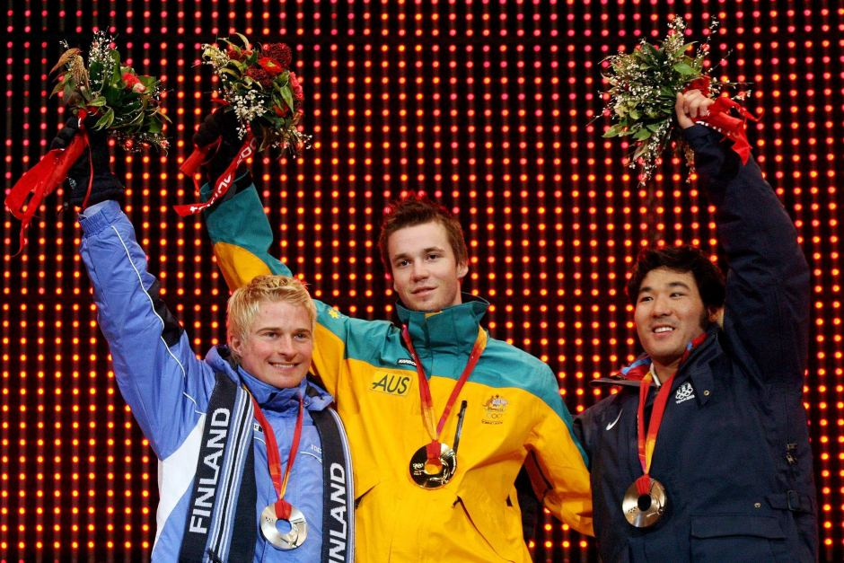

Three of the most memorable, iconic and kinda funny wins of Australia during the Winter Olympics so far...
Imagine the Olympic skater trying so hard to overtake his competitors while he raced from the last position of the players and then suddenly all the other athletes fall down and the last one whizzes past them all to bring the gold home!
This is exactly what happened in 2002 to Australia's champion top speed skater Steven Bradbury. What most people do not realize is that Bradbury was already a real sport, top speed athlete who just had the misfortune of crashing out in almost all his previous races and losing a win he was capable of getting. Oh how his luck turned in the 2002 Winter Olympic races when all but him came tumbling down the track and he got an easy win!
Benjamin Conkey– You would’ve been asked about this a million times, but that feeling when you see everyone on the ice and you’re going through for the first – not just Australian gold medal but the first southern hemisphere gold medal – just talk us through that moment.
Steven Bradbury – Yeah, it was an insane moment. One of the most memorable moments in the history of sport, and I was fortunate to be there at the right place at the right time. I wasn’t sure if I should put my arms out in the air and celebrate or if I should quickly go and hide in the corner. I didn’t really know what the appropriate response was at that moment.
I wasn’t sure if I should put my arms out in the air and celebrate or if I should quickly go and hide in the corner.
Dale Begg-Smith, aka Australia's (and the world's) youngest ever winner of the men's moguls competition as of the 2006 Winter Olympics, is famous for avoiding talking to the media and letting his skiing do the talking.
After Steven Bradbury and one Alisa Camplin, Dale Begg-Smith became Australia's third Winter Olympics gold medalist, in Torina, Italy. He has won a total of three World Cup rounds and is ranked #1 in the world in the Moguls discipline. His domination in the sport world is only matched by one other skier in history, Edgar Grospiron of France. These two champions are the only ones in the books to have won three consecutive World Cup titles while also being Olympic kings.
We all remember the iconic moment of U.S. sprinter, Tommie Smith and fellow American, John Carlos, standing, as the line goes - head bowed, black-gloved fist thrust into the air in a Black Power salute. Both of them, although sent home in disgrace, were treated as returning heroes for their act of defiance, higlighting segregation and racism when it was in its peaks in their homeland.
Few people are aware of the man standing before both Carlos and Smith, the Australian athlete, Peter Norman. Norman snatched attention by sprinting past Carlos and winning the silver medal of the 2006 race, all the while sporting a badge on his left breast that read "Olympic Project for Human Rights" - a reference to an organization that strived to end racism in sport. Unfortunately, Norman's career ended with that act, his suffering unofficial and his act ridiculed, the talent and legendary moment forgotten. He never ran in the Olympics again. So let's take a moment to remember his moment of heroism.
Film "Salute"- directed by his nephew Mathew Norman